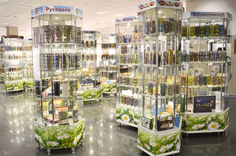

|
История компании началась 16 лет назад. В ассортименте ТД «Руслада» более 7 тысяч наименований конд. изделий: конфеты, карамель, ирис, мармелад, зефир, печенье, вафли, восточные сладости и многое другое. Компания является дистрибьютором более 250 кондитерских фабрик России и ближнего зарубежья, мы работаем по эксклюзивным контрактам, а также реализуем кондитерскую продукцию собственных торговых марок. Высокотехнологичное оборудование и опыт профессионалов, позволяют нам создавать шедевральные кондитерские изделия из натуральных ингредиентов. В свете новой экономической ситуации ТД "Руслада" расширил ассортиментную матрицу, теперь кроме кондитерской продукции вы можете приобрести овощную, рыбную и молочную консервацию в ассортименте. |
|  |
|
Сегодня ежесуточный оборот компании - 150 тонн кондитерской продукции в более чем 30 регионов страны, и это не предел: собственная логистическая структура и отработанный механизм логистического менеджмента позволяет совершать оперативную доставку не только по городу, но и за его пределами; в собственности компании автопарк на 100 автомобилей - от "Газелей" до "автопоездов"; расположение базы Торгового Дома «Руслада» на крупной транспортной развязке с удобными подъездными путями; наличие собственных ж/д путей - 3 железнодорожных ветки, которые дают возможность принимать и отправлять продукцию железнодорожным транспортом. В просторном торговом зале вы можете ознакомиться с ассортиментом продукции, поучаствовать в дегустациях или презентациях новинок кондитерского рынка. |
|
Быстрый темп жизни диктует нам свои условия. Иногда мы не успеваем хорошо пообедать, а до ужина еще далеко, вот и приходится постоянно перекусывать, чем придется. Если для взрослого человека это привычный режим дня, то для детского организма такое питание нежелательно. Начинаются школьные занятия, вместе с ними осень вступает в свои права - день идет на убыль. Дети в такие моменты как никто нуждаются не только в сытных и здоровых завтраках, но и в хороших перекусах, чтобы поддерживать тонус в течение дня. К сожалению не все дети любят овощи и каши, насколько бы они не были полезны. А шоколадки и чипсы совсем не подходят для детского организма. Кондитерская фабрика Колос выпустила новые вкусные хрустящие слойки "Вместо семечек". Печенье, приготовленное по особой технологии, будут вкусным и сытным перекусом на перемене для ребенка, не принося при этом никакого вреда молодому растущему организму. В производстве "Вместо семечек" в качестве начинки для слоения используется песочное тесто, вследствие чего слойки получаются хрупкой структуры и по вкусовым качествам напоминают печенье. Ваш малыш будет бодрым и здоровым, а хрустящие слойки хорошо придутся к столу и для всей семьи. Все любят итальянскую кухню, особенно различные десерты. Сладости для итальянцев- это не просто еда, а символ торжества. Так, вкуснейшие итальянские трубочки Каноли издавна подавали в Сицилии на светских приемах и дамских посиделках. Однако, уникальный рецепт трубочек со временем начал распространяться по всей Италии, а затем и по всему миру. Кондитерская фабрика "Колос" подхватила общую тенденцию и выпустила свои Каноли, не уступающие по вкусовым качествам. В разных городах Италии этот десерт готовят по-разному и везде по-своему вкусно. Теперь, чтобы попробовать итальянскую выпечку не обязательно ехать в Италию или идти в дорогой итальянский ресторан. Сицилийская сладость от фабрики "Колос" - это ароматные слоеные трубочки с тремя нежными начинками: шоколадной, сливочной и карамельной, посыпанные сахарной пудрой. Мягкие, тающие во рту, они станут любимым лакомством даже для истинных гурманов. Трубочки Каноли добавят в ваш привычный десерт немного Италии, а три вкусных начинки сделают его разнообразнее. Buon appetito! |